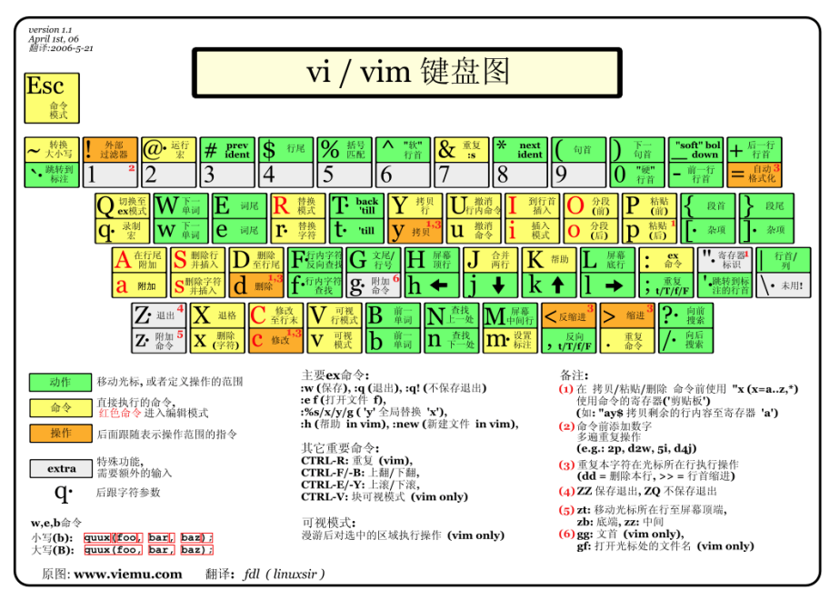
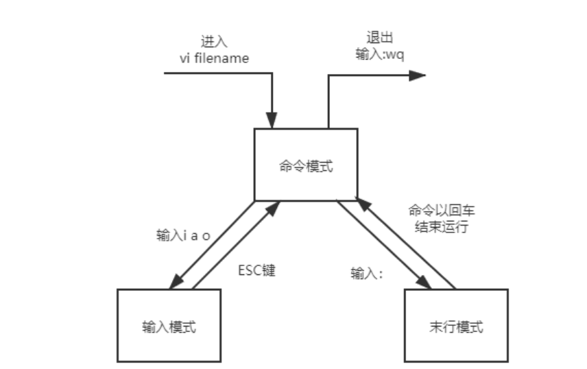
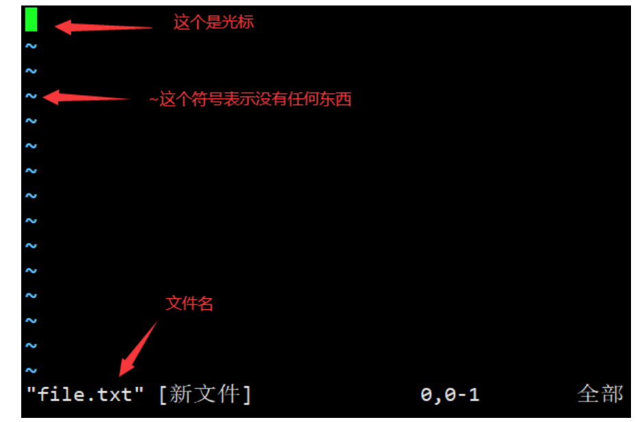
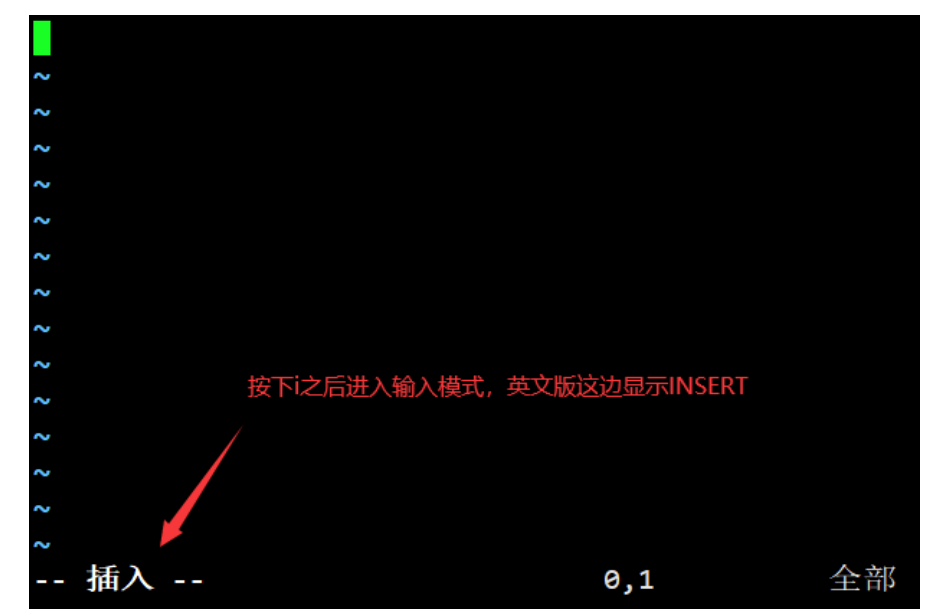
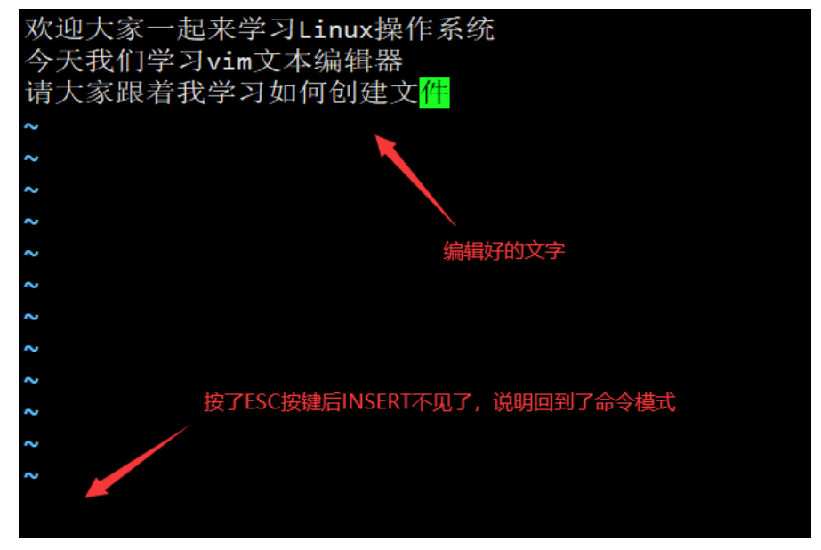
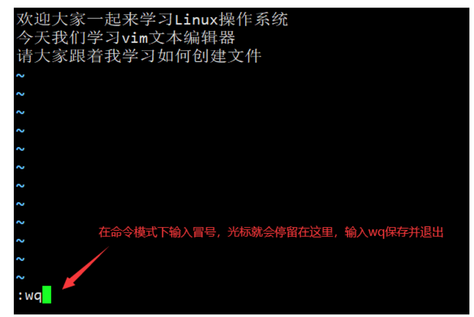

Linux文件管理
我们知道Linux的目录结构为树状结构，最顶级的目录为根目录 /。
其他目录通过挂载可以将它们添加到树中，通过解除挂载可以移除它们。
在开始本教程前我们需要先知道什么是绝对路径与相对路径。
绝对路径
- 路径的写法，由根目录 / 写起，例如： /usr/share/doc 这个目录
相对路径
- 路径的写法，不是由 / 写起，例如由 /usr/share/doc 要到 /usr/share/man 底下时，可以 写成： cd …/man 这就是相对路径的写法。
文件管理命令
几个常见的处理目录的命令
ls（英文全拼：list files）: 列出目录及文件名
cd（英文全拼：change directory）：切换目录
pwd（英文全拼：print work directory）：显示目前的目录
mkdir（英文全拼：make directory）：创建一个新的目录
rmdir（英文全拼：remove directory）：删除一个空的目录
cp（英文全拼：copy file）: 复制文件或目录
rm（英文全拼：remove）: 删除文件或目录
mv（英文全拼：move file）: 移动文件与目录，或修改文件与目录的名称
touch（创建新文件）
用于修改文件或者目录的时间属性，包括存取时间和更改时间。若文件不存在，系统会建立一个新的文件。
1 | |
实例
创建新空白文件
1 | |
mkdir (创建新目录)
创建新的目录
1 | |
选项
-m：配置文件的权限喔！直接配置，不需要看默认权限 (umask)(自己没有试验成功)
-p：帮助你直接将所需要的目录(包含上一级目录)递归创建起来！
-v:显示目录创建的过程
实例
1 | |
cp (复制文件或目录)
拷贝文件和目录
1 | |
选项
-a：相当于 -pdr 的意思，至于 pdr 请参考下列说明；(常用)
-d：若来源档为连结档的属性(link file)，则复制连结档属性而非文件本身；
-f：为强制(force)的意思，若目标文件已经存在且无法开启，则移除后再尝试一次；
-i：若目标档(destination)已经存在时，在覆盖时会先询问动作的进行(常用)
-l：进行硬式连结(hard link)的连结档创建，而非复制文件本身；
-p：连同文件的属性一起复制过去，而非使用默认属性(备份常用)；
-r：递归持续复制，用於目录的复制行为；(常用)
-s：复制成为符号连结档 (symbolic link)，亦即『捷径』文件；
-u：若 destination 比 source 旧才升级 destination ！
-v：显示复制的详细过程
实例
1 | |
mv(移动文件与目录，或修改名称)
移动文件与目录，或修改名称
1 | |
选项
1 | |
rm (移除文件或目录)
移除文件或目录
1 | |
选项
-f：就是 force 的意思，忽略不存在的文件，不会出现警告信息；
-i：互动模式，在删除前会询问使用者是否动作
-r：递归删除啊！最常用在目录的删除了！这是非常危险的选项！！！
实例
1 | |
文本文件查看
在Linux中一切皆文件，说的就是Linux利用文本文件来保存系统所有的设置。 我们在Linux中想实现一个功能，不可避免的需要查看文本文件，修改文本文件。
cat
用于打开文本文件并显示出来
1 | |
选项
-n：由 1 开始对所有输出的行数编号
-b：和 -n 相似，只不过对于空白行不编号。
-s：当遇到有连续两行以上的空白行，就代换为一行的空白行。
-A：显示控制字符。
实例
查看anaconda-ks.cfg文件
1 | |
查看anaconda-ks.cfg文件，并且显示行号
1 | |
less
可以随意浏览文件，支持翻页和搜索，支持向上翻页和向下翻页
实例
1 | |
head
查看文件的开头部分的内容
1 | |
选项
-q：隐藏文件名，默认是隐藏
-v：显示文件名
-c<数目>：显示的字节数。
-n<行数>：显示的行数。
实例
查看文件的前6行
1 | |
tail
会把文本文件里的最尾部的内容显示在屏幕上
1 | |
参数
-f：循环读取
-q：隐藏文件名，默认隐藏
-v：显示文件名
-c<数目>：显示的字节数
-n<行数>：显示文件的尾部 n 行内容
-s：与-f合用,表示在每次反复的间隔休眠S秒
实例
查看文件anaconda-ks.cfg尾部的3行
1 | |
查看日志的实时更新情况
1 | |
查看文件anaconda-ks.cfg从第10行到结尾
1 | |
grep
针对文件内容进行过滤，本工具属于文本三剑客，后续会详细讲解，目前只要求初学者掌握最基本的实 例即可
实例
1 | |
文本文件编辑
在Linux中只掌握文本查看是远远不够的，我们还需要掌握编辑文本文件
Linux上也有图形化的文本编辑器，类似于windows的记事本，但是很多时候我们只能用命令行来管理 Linux操作系统，所以必须要掌握命令行的文本编辑器软件。
目前常见的命令行文本编辑器
nano：在debain系列的系统上会比较常见，但是其他的Linux发行版也都可以安装
vi：所有的 Unix Like 系统都会内建 vi 文本编辑器，其他的文本编辑器则不一定会存在。
vim：具有程序编辑的能力，可以主动的以字体颜色辨别语法的正确性，方便程序设计。
目前vim是使用的最多的，也是比较推荐的，下面就来讲一下vim
什么是 vim？
Vim是从 vi 发展出来的一个文本编辑器。代码补完、编译及错误跳转等方便编程的功能特别丰富，在程 序员中被广泛使用。
简单的来说， vi 是老式的字处理器，不过功能已经很齐全了，但是还是有可以进步的地方。 vim 则可以 说是程序开发者的一项很好用的工具。
连 vim 的官方网站 (http://www.vim.org) 自己也说 vim 是一个程序开发工具而不是文字处理软件。
vim是一个纯命令行文本编辑器，很多文本编辑的功能都是通过键盘快捷键的方式完成，所以我们需要 记住常用的键位，在vim官方网站上我们可以找到vim键盘图的完整版，不过对于初学者来说，我们只需 要知道常用的就可以了。

vi/vim 的使用
基本上 vi/vim 共分为三种模式，分别是命令模式（Command mode），输入模式（Insert mode）和 末行模式（Last line mode）。 这三种模式的作用分别是：
命令模式
用户刚刚启动 vi/vim，便进入了命令模式。
此状态下敲击键盘动作会被Vim识别为命令，而非输入字符。比如我们此时按下 i ，并不会输入一个字 符， i 被当作了一个命令。
以下是常用的几个命令：
i切换到输入模式，以输入字符。
x删除当前光标所在处的字符。
:切换到末行模式，以在最底一行输入命令。
:切换到末行模式，以在最底一行输入命令。
命令模式只有一些最基本的命令，因此仍要依靠末行模式输入更多命令。
输入模式
在命令模式下按下 i 就进入了输入模式。
在输入模式中，可以使用以下按键：
字符按键以及Shift组合，输入字符
ENTER，回车键，换行
BACK SPACE，退格键，删除光标前一个字符
DEL，删除键，删除光标后一个字符
方向键，在文本中移动光标
HOME/END，移动光标到行首/行尾
Page Up/Page Down，上/下翻页
Insert，切换光标为输入/替换模式，光标将变成竖线/下划线
ESC，退出输入模式，切换到命令模式
末行模式
在命令模式下按下 : （英文冒号）就进入了末行模式。
末行模式可以输入单个或多个字符的命令，可用的命令非常多。
在末行模式中，基本的命令有
:q退出程序
:w保存文件
按ESC键可随时退出末行模式。
简单的说，我们可以将这三个模式的关系用下图来表示：

vi/vim使用实例
有些linux发行套件上并没有安装vim，我们可以安装一下，下面提供了centos的安装命令
1 | |
vi和vim大部分的操作完全一模一样，所以会使用vim自然也会使用vi
编辑一个文档
直接输入 vim 文件名 就能够进入 vim 的一般模式了。请注意，记得 vim 后面一定要加文件名，不管该 文件存在与否！
1 | |
输入这条命令之后，会看到如下画面

按下 i 进入输入模式(也称为编辑模式)，开始编辑文字
在命令模式之中，只要按下 i , o , a 等字符就可以进入输入模式了！
在编辑模式当中，你可以发现在左下角状态栏中会出现 --INSERT-- 的字样，那就是可以输入任意字符的 提示。
这个时候，键盘上除了 Esc 这个按键之外，其他的按键都可以视作为一般的输入按钮了，所以你可以进 行任何的编辑。

好了，假设我已经按照上面的样式给他编辑完毕了，那么应该要如何退出呢？是的！没错！就是给他按 下 Esc 这个按钮即可！马上你就会发现画面左下角 --INSERT-- 的不见了！

输入:wq后回车即可保存离开，注意其中的冒号必须是英文输入法下的冒号

现在我们就成功创建了一个文件，查看文件的内容吧
1 | |
vi/vim按键说明
除了上面简易范例的 i, Esc, :wq 之外，其实 vim 还有非常多的按键可以使用。
下面将会列举出vim非常多的常用按键，初学者只需要浏览一遍，记住大概vim有哪些功能，等后面大量 使用vim的时候，再来翻阅笔记，并且在多次使用中把这些功能记住。
命令模式
下面的操作都是在命令模式下进行的
移动光标的方法
| h 或 向左 箭头键 (←) | 光标向左移动一个字符 |
|---|---|
| j 或 向下 箭头键(↓) | 光标向下移动一个字符 |
| k 或 向上 箭头键(↑) | 光标向上移动一个字符 |
| l 或 向右 箭头键 (→) | 光标向右移动一个字符 |
| [Ctrl] + [f] | 屏幕『向下』移动一页，相当于 [Page Down]按键 (常用) |
| [Ctrl] + [b] | 屏幕『向上』移动一页，相当于 [Page Up] 按键 (常用) |
| [Ctrl] + [d] | 屏幕『向下』移动半页 |
| [Ctrl] + [u] | 屏幕『向上』移动半页 |
| + | 光标移动到非空格符的下一行 |
| - | 光标移动到非空格符的上一行 |
| n | 那个 n 表示『数字』，例如 20 。按下数字后再按空格键，光标会向右移动这一行的 n 个字符。例如 20 则光标会向后面移动 20 个字符距离。 |
| 0 或功能 键[Home] | 这是数字『 0 』：移动到这一行的最前面字符处 (常用) |
| $ 或功能 键[End] | 移动到这一行的最后面字符处(常用) |
| H | 光标移动到这个屏幕的最上方那一行的第一个字符 |
| M | 光标移动到这个屏幕的中央那一行的第一个字符 |
| L | 光标移动到这个屏幕的最下方那一行的第一个字符 |
| G | 移动到这个档案的最后一行(常用） |
| nG | n 为数字。移动到这个档案的第 n 行。例如 20G 则会移动到这个档案的第 20 行(可 配合 :set nu) |
| gg | 移动到这个档案的第一行，相当于 1G 啊！ (常用) |
| n | n 为数字。光标向下移动 n 行(常用) |
删除/剪切、复制与粘贴
| x, X | 在一行字当中，x 为向后删除一个字符 (相当于 [del] 按键)， X 为向前删除一个字符(相 当于 [backspace] 亦即是退格键) (常用) |
|---|---|
| nx | n 为数字，连续向后删除 n 个字符。举例来说，我要连续删除 10 个字符， 『10x』。 |
| dd | 删除/剪切光标所在的那一整行(常用) |
| ndd | n 为数字。删除/剪切光标所在的向下 n 行，例如 20dd 则是删除 20 行 (常用) |
| d2G | 删除光标所在到第一行的所有数据 |
| dG | 删除光标所在到最后一行的所有数据 |
| d$ | 删除游标所在处，到该行的最后一个字符 |
| d0 | 那个是数字的 0 ，删除光标所在处，到该行的最前面一个字符 |
| yy | 复制游标所在的那一行(常用) |
| nyy | n 为数字。复制光标所在的向下 n 行，例如 20yy 则是复制 20 行(常用) |
| y1G | 复制游标所在行到第一行的所有数据 |
| yG | 复制游标所在行到最后一行的所有数据 |
| y0 | 复制光标所在的那个字符到该行行首的所有数据 |
| y$ | 复制光标所在的那个字符到该行行尾的所有数据 |
| p,P | p 为将已复制的数据在光标下一行贴上，P 则为贴在光标上一行！ 举例来说，我目前光 标在第 20 行，且已经复制了 10 行数据。则按下 p 后， 那 10 行数据会贴在原本的 20 行之后，亦即由 21 行开始贴。但如果是按下 P 呢？ 那么原本的第 20 行会被推到变成 30 行。 (常用) |
| j | 将光标所在行与下一行的数据结合成同一行 |
| c | 重复删除多个数据，例如向下删除 10 行，[ 10c ] |
| u | 复原前一个动作。(常用) |
| [Ctrl]+r | 重做上一个动作。(常用) |
| . | 重复前一个动作。 如果你想要重复删除、重复贴上等等动作，按下小数点『.』就好 了！ (常用) |
进入输入或取代的编辑模式
| i, I | 进入输入模式(Insert mode)： i 为『从目前光标所在处输入』， I 为『在目前所在行的 第一个非空格符处开始输入』。 (常用) |
|---|---|
| a, A | 进入输入模式(Insert mode)： a 为『从目前光标所在的下一个字符处开始输入』， A 为 『从光标所在行的最后一个字符处开始输入』。(常用) |
| o, O | 进入输入模式(Insert mode)： 这是英文字母 o 的大小写。o 为在目前光标所在的下一行 处输入新的一行； O 为在目前光标所在的上一行处输入新的一行！(常用) |
| r, R | 进入取代模式(Replace mode)： r 只会取代光标所在的那一个字符一次；R会一直取代光 标所在的文字，直到按下 ESC 为止；(常用) |
| [Esc] | 退出编辑模式，回到一般模式中(常用) |
末行模式下的储存、离开等指令
| :w | 将编辑的数据写入硬盘中(常用) |
|---|---|
| :w! | 若文件属性为『只读』时，强制写入该文件。不过，到底能不能写入， 还是跟你对 该文件的权限有关 |
| :q | 离开 vi (常用) |
| :q! | 若曾修改过文件，又不想储存，使用 ! 为强制离开不储存。 |
| :wq | 储存后离开，若为 :wq! 则为强制储存后离开 (常用) |
| ZZ | 这是大写的 Z 喔！如果修改过，保存当前文件，然后退出！效果等同于(保存并退 出) |
| :x | 效果等同于(保存并退出) |
| :X | 大写的X，用于加密文件 |
| ZQ | 不保存，强制退出。效果等同于:q!。 |
| :w [filename] | 将编辑的数据储存成另一个文件（类似文件另存为） |
| :r [filename] | 在编辑的数据中，读入另一个文件的数据。亦即将 『filename』 这个文件内容加 到光标所在行后面 |
| :n1,n2 w [filename] | 将 n1 到 n2 的内容储存成 filename 这个文件。 |
| :! command | 暂时离开 vi 到bash命令行下执行 command 的显示结果！例如 『:! ls /home』即 可在 vi 当中察看 /home 底下以 ls 输出的文件信息！ |
vim环境变量修改
| :set nu | 显示行号，设定之后，会在每一行的前缀显示该行的行号 |
|---|---|
| :set nonu | 与 set nu 相反，为取消行号！ |